- 01 搭建学习环境准备篇.md.html
- 02 RocketMQ 核心概念扫盲篇.md.html
- 03 消息发送 API 详解与版本变迁说明.md.html
- 04 结合实际应用场景谈消息发送.md.html
- 05 消息发送核心参数与工作原理详解.md.html
- 06 消息发送常见错误与解决方案.md.html
- 07 事务消息使用及方案选型思考.md.html
- 08 消息消费 API 与版本变迁说明.md.html
- 09 DefaultMQPushConsumer 核心参数与工作原理.md.html
- 10 DefaultMQPushConsumer 使用示例与注意事项.md.html
- 11 DefaultLitePullConsumer 核心参数与实战.md.html
- 12 结合实际场景再聊 DefaultLitePullConsumer 的使用.md.html
- 13 结合实际场景顺序消费、消息过滤实战.md.html
- 14 消息消费积压问题排查实战.md.html
- 15 RocketMQ 常用命令实战.md.html
- 16 RocketMQ 集群性能摸高.md.html
- 17 RocketMQ 集群性能调优.md.html
- 18 RocketMQ 集群平滑运维.md.html
- 19 RocketMQ 集群监控（一）.md.html
- 20 RocketMQ 集群监控（二）.md.html
- 21 RocketMQ 集群告警.md.html
- 22 RocketMQ 集群踩坑记.md.html
- 23 消息轨迹、ACL 与多副本搭建.md.html
- 24 RocketMQ-Console 常用页面指标获取逻辑.md.html
- 25 RocketMQ Nameserver 背后的设计理念.md.html
- 26 Java 并发编程实战.md.html
- 27 从 RocketMQ 学基于文件的编程模式（一）.md.html
- 28 从 RocketMQ 学基于文件的编程模式（二）.md.html
- 29 从 RocketMQ 学 Netty 网络编程技巧.md.html
- 30 RocketMQ 学习方法之我见.md.html
01 搭建学习环境准备篇
本文主要分如下几个部分展开：
- Linux 服务器安装 RocketMQ、RocketMQ-Console
- IDEA 中搭建可调试环境
Linux 安装 RocketMQ、RocketMQ-Console
安装 RocketMQ
Step1：从如下地址下载 RocketMQ 安装包
cd /opt/application
wget https://mirrors.tuna.tsinghua.edu.cn/apache/rocketmq/4.7.1/rocketmq-all-4.7.1-bin-release.zip
Step2：解压安装包
unzip rocketmq-all-4.7.1-bin-release.zip
ls -l
解压后的文件如下图所示：
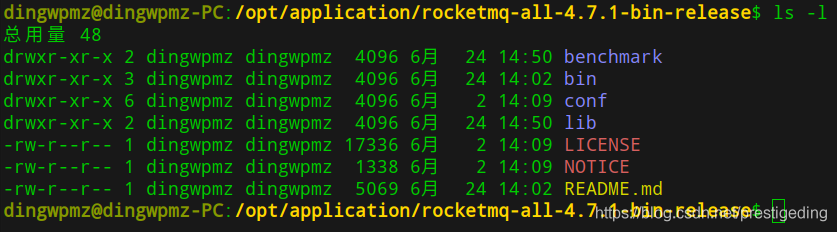
其中 conf 文件夹存放的是 RocketMQ 的配置文件，提供了各种部署结构的示例配置。例如 2m-2s-async 是 2 主 2 从异步复制的配置示例；2m-noslave 是 2 主的示例配置。由于本文主要是搭建一个学习环境，故采取的部署架构为 1 主的部署架构，关于生产环境下如何搭建 RocketMQ 集群、如何调优参数将在该专栏的后续文章中专门介绍。
Step3：修改 NameServer JVM 参数
cd bin
vi runserver.sh
# 定位到如下代码
JAVA_OPT="${JAVA_OPT} -server -Xms4g -Xmx4g -Xmn2g -XX:MetaspaceSize=128m -XX:MaxMetaspaceSize=320m"
# 修改 "-Xms -Xmx -Xmn" 参数
JAVA_OPT="${JAVA_OPT} -server -Xms512M -Xmx512M -Xmn256M -XX:MetaspaceSize=128m -XX:MaxMetaspaceSize=320m"
温馨提示：这里修改 JVM 参数主要目的是个人学习电脑内存不够，默认 NameServer 会占用 4G。
Step4：启动 NameServer
nohup ./mqnamesrv &
查看 ${user_home}/logs/rocketmqlogs/namesrv.log 日志文件，如果输出结果如下图所示即表示启动成功。
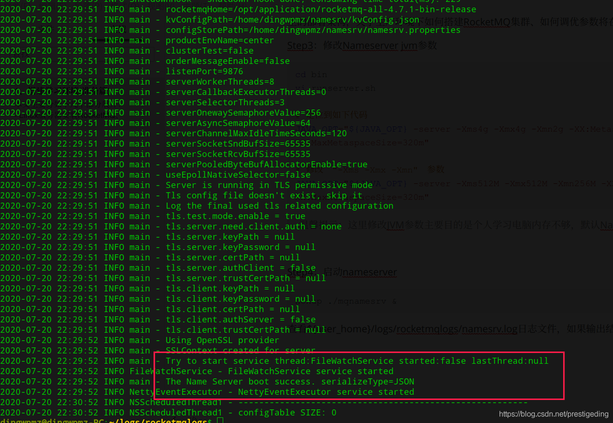
Step5：修改 Broker 的配置文件
vi conf/broker.conf
# 使用如下配置文件
brokerClusterName = DefaultCluster
brokerName = broker-a
brokerId = 0
deleteWhen = 04
fileReservedTime = 48
brokerRole = ASYNC_MASTER
flushDiskType = ASYNC_FLUSH
storePathRootDir=/data/rocketmq/store
storePathCommitLog=/data/rocketmq/store/commitlog
namesrvAddr=127.0.0.1:9876
brokerIP1=192.168.3.10
brokerIP2=192.168.3.10
autoCreateTopicEnable=false
Step6：修改 Broker JVM 参数
cd bin
vi runbroker.sh
#修改如下配置(配置前)
JAVA_OPT="${JAVA_OPT} -server -Xms8g -Xmx8g -Xmn4g"
#配置后
JAVA_OPT="${JAVA_OPT} -server -Xms1g -Xmx1g -Xmn512m"
Step7：启动 Broker
cd bin
nohup ./mqbroker -c ../conf/broker.conf &
查看 ${user_home}/logs/rocketmqlogs/broker.log，如果输出结果如下图所示表示启动成功。
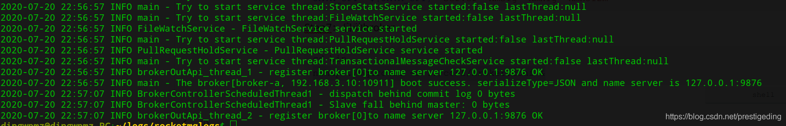
经过上面的步骤，就成功在 Linux 环境上安装了 RocketMQ NameServer 服务器与 Broker 服务器。
温馨提示：如果上面在安装过程中发生了错误，大家可以查看
${user_home}/logs/rocketmqlogs中的日志，通过错误日志，能够较为直观的判断错误的原因。其中${user_home}为用户主目录。该目录下会有众多的日志文件，如果一开始对这些文件的含义不了解也没关系，大家可以通过
ls -l命令，逐一查看文件大小不为０的文件，从而寻找错误日志，便于快速解决问题。
RocketMQ 提供了众多的运维命令来查看 RocketMQ 集群的运行状态，在这里我先简单使用 clusterList 命令来查看集群的状态，用于验证一下集群的状态。
sh ./mqadmin clusterList -n 127.0.0.1:9876
其运行结果如下图所示：
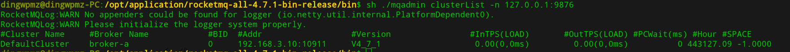
安装 RocketMQ-Console
使用运维命令不太直观，学习成本较大，为此 RocketMQ 官方提供了一个运维管理界面 RokcetMQ-Console，用于对 RocketMQ 集群提供常用的运维功能，故本节主要讲解如何在 Linux 环境安装 RokcetMQ-Console。
RocketMQ 官方并未提供 RokcetMQ-Console 的安装包，故需要通过源码进行编译。
Step1：下载源码
wget https://github.com/apache/rocketmq-externals/archive/rocketmq-console-1.0.0.tar.gz
tar -xf rocketmq-console-1.0.0.tar.gz
# 重命名，为了方便后续操作
mv rocketmq-externals-rocketmq-console-1.0.0/rocketmq-console rocketmq-console
Step2：修改配置文件
cd rocketmq-console
vi src/main/resources/applications.properties
主要是修改指向的 NameServer 地址，修改结果如下图所示：
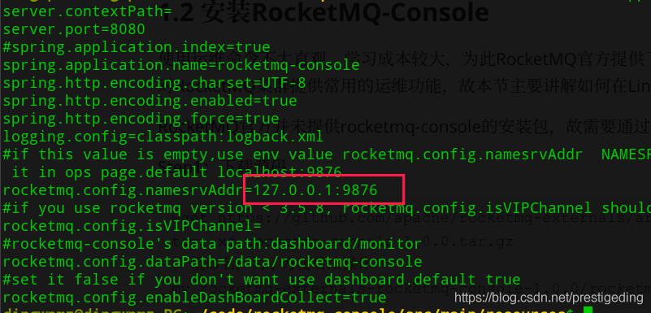
Step3：使用 Maven 命令编译源代码
mvn clean package -DskipTests
编译后在 target 目录下会生成可运行的 jar 包，如下图所示：
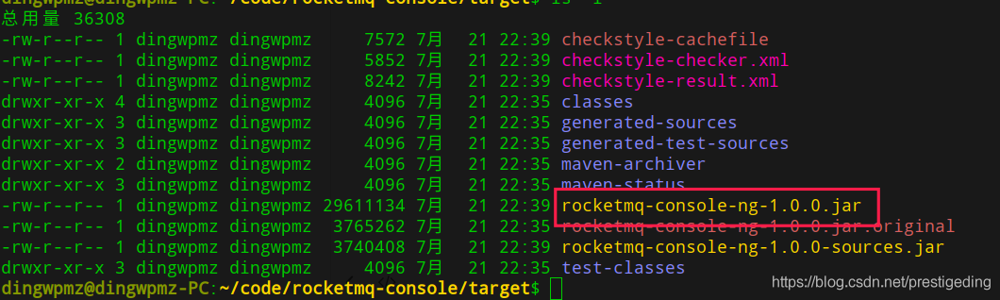
Step4：我们可以将该包复制到自己常用的软件安装目录，例如笔者喜欢将其放在 /opt/application 下
cp rocketmq-console-ng-1.0.0.jar /opt/application/
Step5：启动 RokcetMQ-Console
nohup java -jar rocketmq-console-ng-1.0.0.jar &
在浏览器中输入 http://localhost:8080 查看是否安装成功，如果出现如下图则表示安装成功。
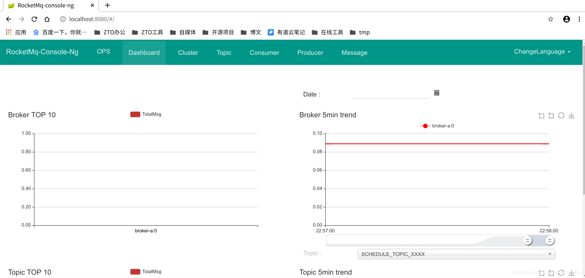
异常分析与解决思路
如果在安装过程中出现意想不到的错误，别慌，通过查看相关的日志文件，寻找错误日志，根据错误日志进行思考或百度，相信能够轻易将其解决。
例如使用的 Baseuser 启动的 RocketMQ、RokcetMQ-Console，相关的日志路径如下：
- RocketMQ：/home/baseuser/logs/rocketmqlogs/
- RokcetMQ-Console：/home/baseuser/logs/consolelogs
IDEA 中安装 RocketMQ
绝大数的程序员最信赖的开发调试工具基本都是 Debug，那能在 IDEA 中 Debug RocketMQ 的源码吗？答案当然是可以的。本节就来演示如何在 IDEA 中运行 RocketMQ 的 NameServer、Broker 组件，并进行 Debug。
Setp1：从 GitHub 上下载 RocketMQ 源码，并将其导入到 IEDA 中
其截图如下：
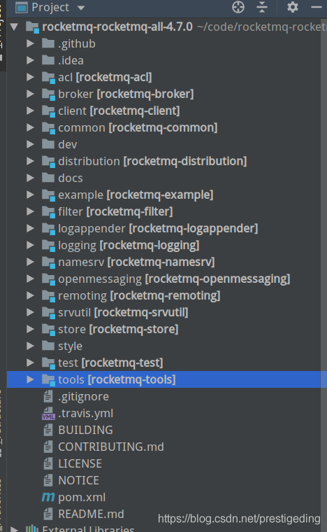
Step2：namesrv/src/main/java/org/apache/rocketmq/namesrv/NamesrvStartup 设置环境变量 ROCKETMQ_HOME
操作步骤如下图所示：
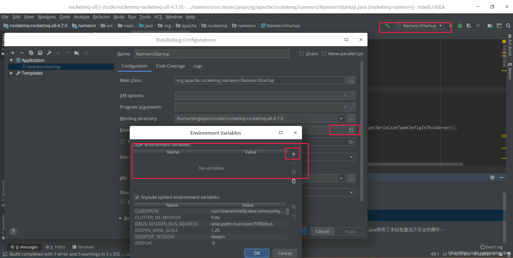
设置环境变量名称：ROCKETMQ_HOME，其值用于指定 RocketMQ 运行的主目录，笔者设置的路径为：/home/dingwpmz/tmp/rocketmq。
Step3：将 distribution/conf/logback_namesrv.xml 文件拷贝到 Step2 中设置的主目录下
执行后的效果如下图所示：
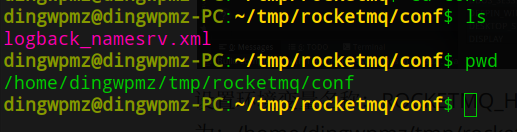
温馨提示：该文件为 NameServer 的日志路劲，可以手动修改 logback_namesrv.xml 文件中的日志目录，由于这是 Logback 的基础知识，这里就不再详细介绍 Logback 的配置方法。
Step4：以 Debug 方法运行 NamesrvStartup,执行效果如下图所示,表示启动成功
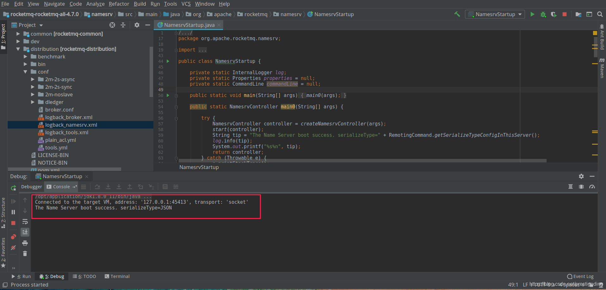
Step5：将 distribution/conf/logback_brokerxml、broker.conf 文件拷贝到 Step2 中设置的主目录下
执行后的效果如下图所示：
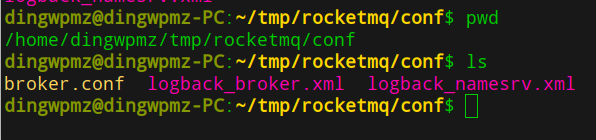
Step6：修改 broker.conf 中的配置，主要设置 NameServer 的地址、Broker 的名称等相关属性
vi broker.conf
# 使用如下配置文件
brokerClusterName = DefaultCluster
brokerName = broker-a
brokerId = 0
deleteWhen = 04
fileReservedTime = 48
brokerRole = ASYNC_MASTER
flushDiskType = ASYNC_FLUSH
storePathRootDir=/home/dingwpmz/tmp/rocketmq/store
storePathCommitLog=/home/dingwpmz/tmp/rocketmq/store/commitlog
namesrvAddr=127.0.0.1:9876
brokerIP1=192.168.3.10
brokerIP2=192.168.3.10
autoCreateTopicEnable=true
Step7：broker/src/main/java/org/apache/rocketmq/broker/BrokerStartup 设置环境变量 ROCKETMQ_HOME
操作步骤如下图所示：
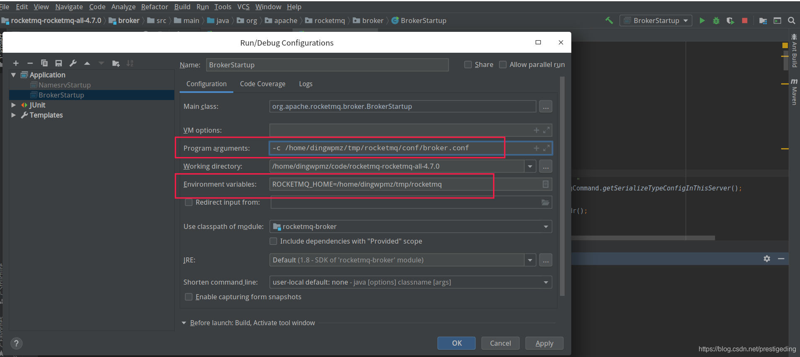
Step8：以 Debug 模式运行 BrokerStartup
其运行结果如下图所示：
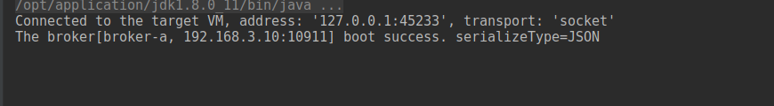
看到这样的提示就表示大功告成。
接下来简单来做一个验证。
首先先在 AbstractSendMessageProcessor 类的 parseRequestHeader 方法中打上一个断点。
然后运行 example 中 org/apache/rocketmq/example/quickstart/Producer，看是否能进入到断点中，运行结果如下图所示，已进入到 Debug 模式。
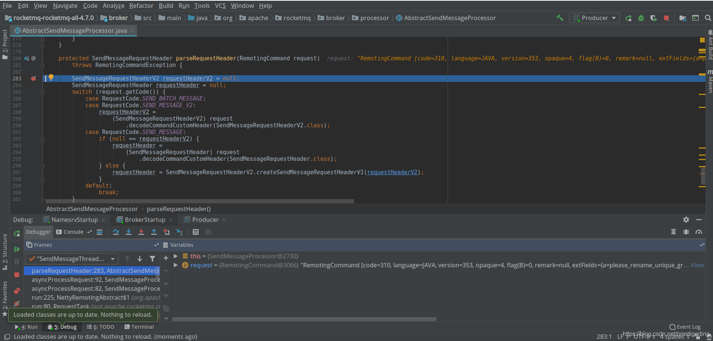
小结
本篇作为 RocketMQ 实战系列的第一篇文章，其目的就是构建一个研究 RocketMQ 的学习环境，故从两个方面进行展开：
- 在 Linux 环境安装 RocketMQ、RocketMQ-Console。
- 在 IDEA 中运行 RocketMQ，构建一个可以调试 RocketMQ 的环境。
温馨提示：搭建一个可调试的环境，但绝不是学习 RocketMQ 源码，就从 Debug 一步一步跟踪，这样会陷入其中而不可自拔。Debug 只是一种辅助，应该用在无法理解某一端代码时使用 Debug，借助运行时的一些数据，使之更容易理解。